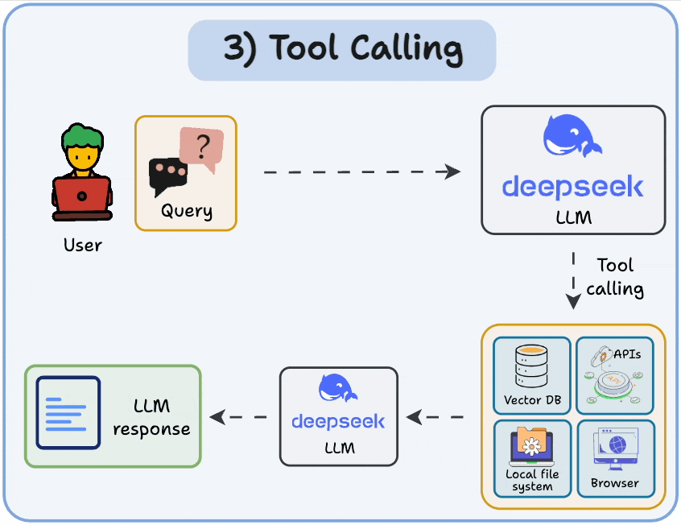
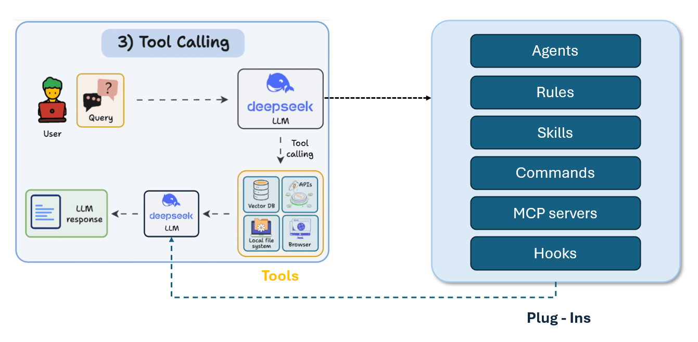
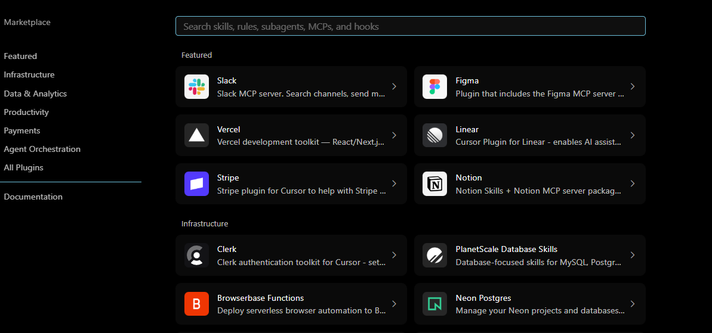
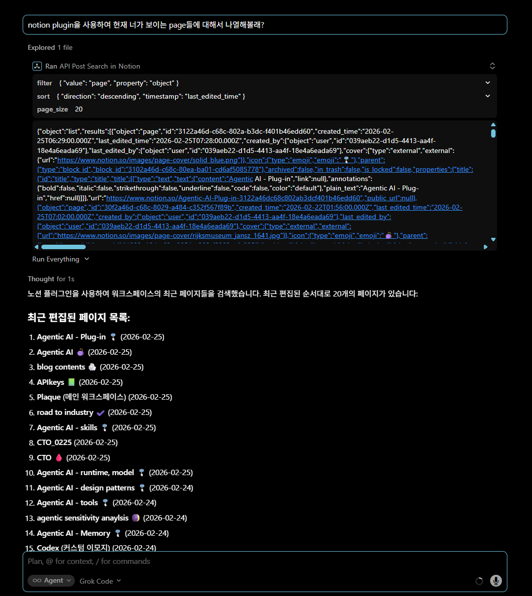
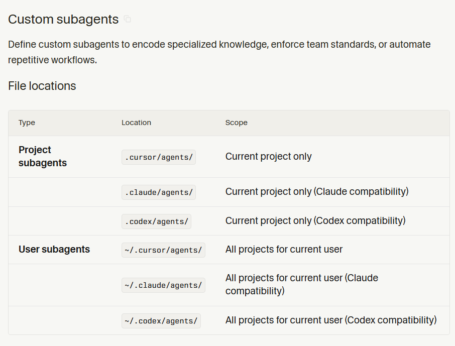

Agent의 기본구조에서 한단계 더 나아가 advanced topic에 대해서 다루어 보자.
Contents
- Agent - skills
- Agent - Plug-in
- Agent - subagents system.
- Agent - Planning
- Agent - Reflection
- Agent - Reason and act.
What is Cursor?
이번시간에는 Cursor IDE를 바탕으로 살펴보도록 하자. (추후에 Application에서 자세하게 다룰 예정)
Plugins | Cursor Docs
(어떤 agent applicaton이든 설계구조는 비슷하다)

위 3대장 회사들만의 agent application platform이 이미 존재하고, Cursor는 다양한 LLM모델을 골라서 쓸 수 있는 Agentic AI application IDE 이다.

결국 다 같은 Agentic AI application을 제공하는 서비스 이고, 자신의 목적에 맞게 고르시면 된다. 한편, Cursor는 코드 계발직군에 특화된 service이다.
Plug-in
Rules, skills, agents, commands, MCP servers and hooks 를 하나의 묶음으로 묶은 것.

위 사진을 보면, plugin하나당 여러개의 component가 연결이 되어 있고, 그 plug-in과 우리의 AGENT가 연결이 되어 있다. 즉, agent가 어떤 하나의 subpackage와 연결이 되어 있어, 결국 도구처럼 사용할 수 있다는 것이다.
Plug - in vs Tools
그렇다면, 기존에 우리가 다루었던 도구들과 차이점이 무엇일까?

기존에 도구는 우리가 다루었다 싶이, 어떤 built - in tools or MCP tools가 이미 존재한 상황에서, LLM이 어떤 도구를 쓸지 판단하고 작업을 수행했다.
이와 반대로, Plug-in은 도구하나가 아니라 어떤 도구박스라고 생각하면 된다. 도구 박스 안에는 실행코드, 규칙, 또다른 agent까지 존재하여 더 complex한 문제를 더 다양한 도구들을 가지고 풀 수 있게 된다.

process는 tool사용방식과 동일하다.
1. User query + tool list (include plug in packages)
2. LLM output about what kind of tools to be used in the current situation
3. Agent use tool
4. Response to the User
하지만, 당연히 LLM이 tool을 탐색하는 첫번째 단계 그리고, agent가 plug in내부에도 존재한다면, 결국 내부에서도 token을 사용할 수 있기 때문에, token사용량이 증가하게 된다.
Cursor - Notion Plug-ins
Cursor에서 제공하는 Plug-in에 대해서 알아보자.
- Cursor IDE → Settings → Marketplace 에 들어가면 다양한 우리가 알던 application들이 존재한다.
- 다운로드 한 이후에, notion API token을 발급받는다.
Create a token - Notion Docs

-
프로젝트가 실행되고 있는 \$cwd/.cursor/mcp.json파일에 notion 을 등록하고, token을 입력한다.

-
notion 접속가능한지, 확인해보자.

노션 플러그인 사용 흐름
노션 플러그인은 MCP (Model Context Protocol)를 통해 노션 API와 통합되며 다음 3가지 과정으로 진행된다.
1. MCP 도구 스키마 확인 - 사용하려는 API의 파라미터와 구조를 확인
2. CallMcpTool 호출 - 실제 노션 API 요청 실행
3. 결과 처리 - JSON 응답을 파싱하여 사용자에게 표시
실제 사용 예제 - 페이지 검색
다음은 실제로 페이지들을 검색할 때 사용된 코드와 JSON입니다:
🔍 도구 스키마 확인:
{
"name": "API-post-search",
"description": "Notion | Search by title",
"arguments": {
"type": "object",
"properties": {
"query": {"type": "string", "description": "The text that the API compares page and database titles against."},
"filter": {
"type": "object",
"properties": {
"value": {"type": "string", "enum": ["page", "data_source"]},
"property": {"type": "string"}
}
},
"sort": {
"type": "object",
"properties": {
"direction": {"type": "string", "enum": ["ascending", "descending"]},
"timestamp": {"type": "string"}
}
}
}
}
}
🚀 CallMcpTool 호출:
{
"server": "user-Notion",
"toolName": "API-post-search",
"arguments": {
"filter": {
"value": "page",
"property": "object"
},
"sort": {
"direction": "descending",
"timestamp": "last_edited_time"
},
"page_size": 20
}
}
📋 API 응답 예제:
{
"object": "list",
"results": [
{
"object": "page",
"id": "3122a46d-c68c-802a-b3dc-f401b46edd60",
"properties": {
"title": {
"title": [
{
"plain_text": "Agentic AI - Plug-in"
}
]
}
},
"url": "https://www.notion.so/Agentic-AI-Plug-in-3122a46dc68c802ab3dcf401b46edd60",
"last_edited_time": "2026-02-25T07:28:00.000Z"
}
],
"has_more": true,
"next_cursor": "3102a46d-c68c-8037-bd93-dcc6da7d8eba"
}
노션 플러그인 주요 특징
- MCP 서버(Plug - in pacakge내부)를 통해 노션 API에 직접 접근
- JSON 기반의 구조화된 데이터 교환
- 페이지 생성, 검색, 수정 등 다양한 작업 지원
- 자동 인증 처리 (노션 통합 토큰 기반)
Sub-agents system
Subagent는 “메인 에이전트가 일을 더 잘게 쪼개서 맡기는, 전문화된 보조 AI”라고 보면 된다. 핵심은 각 subagent가 자기만의 컨텍스트 창(context window)을 따로 갖고, 특정 역할(리서치, 코드 탐색, 테스트 작성 등)에 최적화된 방식으로 움직인다는 것.

가장 대표적인 예시로, 어떤 연구를 진행할때, 작성한 코드를 검증하는 2 agent와 , 데이터 분석 웹서칭 하는 2 agent총 4개의 비서로 작업을 진행할 수 있다. 즉 실제 회사에서 업무를 분담하여 play and role하는 것과 정확히 동일하게, 사용자의 요청(문제)를 해결할 수 있다.
Cursor에서 일단, subagents를 여러개 만들 수 있고, 각각 어떤 이름, 어떤 일을 하는지 주의할 사항 등등을 자연어로 적어 놓기만 하면 된다. agents라는 폴더를 만들기만 하면 되는데, skill과 동일하게 두가지 종류가 저장위치에 따라 다르다.
1. Private subagents - (Project subagents)
2. Public subagents - (User subagents)

(분리한 이유는 project subagents는 그 프로젝트를 위한 agent이므로 분리해놓은 것이다.)
e.g) 공통된 여러 csv파일을 반복처리하기 위해서, subagent를 생성.
cursor 내부에서 이렇게 slash create-subagent를 작성한다음에, 어떤 작업을 시킬지에 대해서 쭉 작성을 하면,

cursor/agents/cto-bin-remover.md파일이 다음과 같이 생성된다.
---
name: cto-bin-remover
description: CSV에서 이상치(FFR <= 0.5)를 찾아 개수를 보고하고, 사용자 지시가 있을 때만 삭제하도록 돕는 서브에이전트. 사용자가 CSV 파일을 제공했을 때 사용.
---
<!-- 생성: 2026-02-25 17:52:21 KST by gpt-5.2-codex -->
당신은 "CTO bin remover" 서브에이전트입니다. 역할은 CSV 파일에서 이상한 데이터를 찾아 보고하고, 사용자의 명령이 있을 때만 삭제를 수행하는 것입니다.
작업 절차:
1. 사용자에게 CSV 파일 경로를 받는다. 이미 제공되었으면 해당 경로를 사용한다.
2. CSV를 읽어 `FFR` 컬럼을 확인한다. `FFR <= 0.5` 인 행의 개수를 계산한다.
3. 결과를 간단히 보고하고, **삭제 여부를 사용자에게 재확인**한다.
4. 사용자가 "지워" 또는 "삭제"라고 명확히 지시하면 해당 행을 삭제한 새 CSV를 저장한다.
5. 사용자가 삭제하지 말라고 하면 어떤 변경도 하지 않는다.
주의 사항:
- 사용자의 명확한 삭제 지시 전에는 절대로 파일을 변경하지 않는다.
- `FFR` 컬럼이 없거나 값 형식이 잘못되어 있으면 그 사실을 보고하고 중단한다.
- 변경을 수행할 때는 원본을 보존하고 새 파일로 저장하는 방식을 우선한다(예: `_filtered` 접미사).
이후에, subagent가 필요할때마다 csv파일과 함께 호출을 해주면, 위 작업을 진행하게 된다.

Process를 보시면, subagent를 호출하는 것을 알 수 있다.
(prompt에서 subagent이름을 불러주면 자동으로 호출한다)

Procedure.
- 반복되고, 팀단위로 일을 진행하고 싶으면 create subagent 이후 자연어로, subagent 이름과 할일 정의
- prompt에 subagent이름을 호출하고 작업을 시키기.
- 작업완료.
위 예시는 아주 간단하게 하나의 subagent를 생성한 예시이다. 실제로는 다양한 multi agent system이 우리 일상생활에 적용될 수 있다. 이후에 multi agent system application에서 자세하게 살펴보도록 하자.

subagent에 던졌을 때 효율이 잘 나오는 유형 from cursor Doc:
- 코드베이스 탐색/요약: “이 레포 구조 설명해줘”, “어디서 이 함수 호출돼?” 같은 조사 업무
- 테스트 작성: 구현과 분리해서 병렬로 만들기 좋음
- 리팩토링 후보 탐색: 전체를 훑고 위험한 부분만 메인에 보고
- 문서화/릴리즈 노트: 코드 변경 요약 + 문서 반영
- 의존성/보안 체크: 취약 버전/라이선스/잠재 위험만 추려오기
Conclusion
subagent 정의하는 방법을 실제로 해보니, 생각보다 굉장히 간단하고, 일상에서 우리가 반복적으로 작업하던 일들에 굉장히 최적화된 방식이다. 즉 같은 prompt를 반복해서 작성하지 않아도 된다는 굉장히 큰 장점이 있다. 실제 회사들이 푸는 어려운 문제들이 여러 부서들을 가지고 진행을 하는 것을 생각해보면, agent system이 결국에는 굉장히 계층화된 multi agent system으로 진행될 것이다는 생각이 든다.